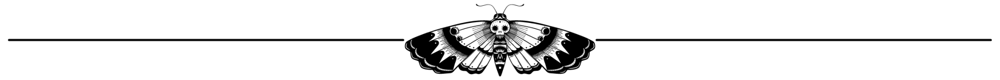

"Hi, Hello, Greetings."
I use He/Him Pronouns!
EN/RU/UA
My Interests include but aren't limited to:
I make music sometimes, and I have translated
for Ukrainian psychologists aiding in the war.
My mental afflictions include:
♠ My favourite films are: ♠
♥ My favourite musical artists are: ♥
♦ My favourite games are: ♦
♣ My favourite books are: ♣